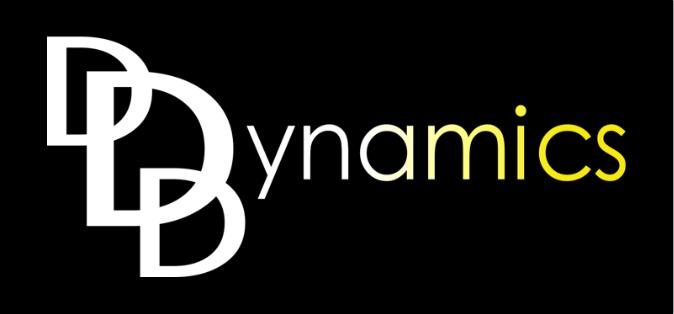
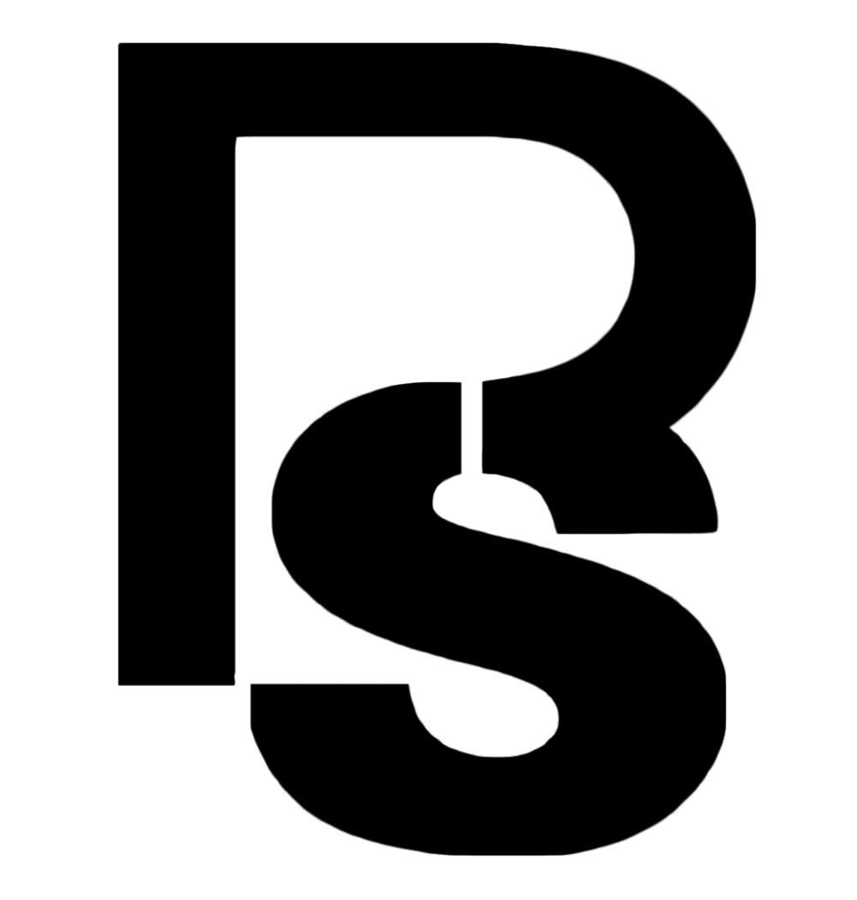
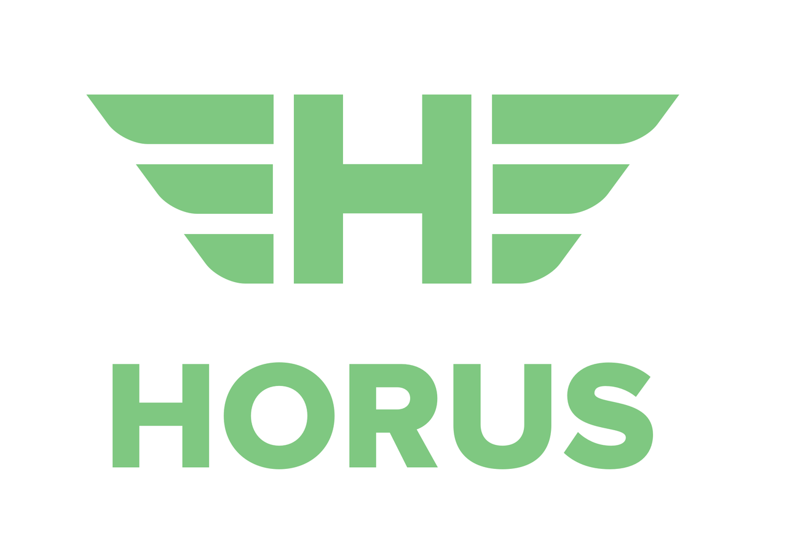
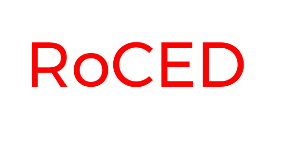

2017 Penn Aerospace Pitch Competition Finalists
1st Place: Protofluidics
ProtoFluidics provides a platform for rapidly prototyping microfluidics in space. Microfluidic research is a highly demanded service on the ISS. Capitalizing on the microgravity environment, researchers can use microfluidics to drastically improve drug discovery, protein crystallography, and more. Microfluidic chips use a network of small, plastic-embedded channels to control liquid flow for fluid-based experiments; their small mass and ease of operation is ideally suited to in-space testing. However, it’s currently expensive (up to $30,000 per launch) and time-consuming (at least three-month delay) to send microfluidic chips to the ISS. Using our modular microfluidic architecture, custom software platform, and the 3D printer on the ISS, we will allow researchers to design, create, and test microfluidics in space cheaply and quickly. Our technology will scale to terrestrial development, allowing researchers to iterate and share designs with a library of CAD modules far more easily than ever before.
Team: Jaimie Carlson, Laura Gao, and Adam Zachar
Jaimie is a junior at the University of Pennsylvania’s School of Engineering and Applied Science, studying for a BSE in bioengineering and computer science and an MSE in robotics. She currently does research in UPenn’s GRASP lab developing an augmented-reality
training device for the da Vinci Surgical System, fueling her interests in computer vision and medical robotics. Her other interests are literature, attending hackathons, and playing quizbowl. In ProtoFluidics, Jamie is
in charge of bioengineering experience, software development, and CAD design.
Laura is a junior at the University of Pennsylvania’s Wharton School of Business studying New Product
Development. She is very interested in the entrepreneurship space on campus, having built her own design company and is currently running a website promoting design, entrepreneurship, and tech at Wharton. Her other passions
include basketball, typography, and digital animation. In ProtoFluidics, Laura is in charge of financial and competitive analysis, branding, and graphic design.
Adam is pursuing simultaneous Bachelors and Masters
degrees in Electrical Engineering at the University of Pennsylvania, with an academic focus in nanotechnology and microfabrication. He co-founded the Penn Aerospace Club with Laura (leading the Space Balloon team, as well
as organizing a class on NewSpace business strategy) to build a community around the space industry on campus. He is especially interested in in-space manufacturing and has performed academic research in semiconductor crystal
processing in microgravity. His long-term vision is to help decentralize humanity, by allowing anyone to make anything anywhere, especially nanotechnology in space. In ProtoFluidics, Adam is in charge of space hardware
experience, user outreach, and CAD design.
2nd Place: Tri-D Dynamics
Through patent-pending innovations in process and design, Tri-D Dynamics aims to be a joint design manufacturer of affordable and efficient rocket engines for rapid SmallSat launch vehicle development and operations. Rocket engines are often the most critical, yet costliest components of launch vehicles. Tri-D Dynamics is a new startup utilizing innovative, proprietary processes to manufacture rocket engines that are more cost-efficient and are quicker to produce than any others out in the market. We aim to aid the New Space movement by bringing down the overall cost of the rocket engine.
Team: Deepak Atyam
Atyam will receive his M.S. in Aerospace Engineering with a Major focus in Manufacturing Engineering from Purdue University ('17) in addition to his B.S. in Aerospace Engineering from UC San Diego ('15). Atyam has worked at Space-X, GLXP Team Moon Express, Purdue's Zucrow Laboratory, NASA JPL (x2), LaRC (x2), and MSFC starting from the age of 17 and has led multiple successful NASA funded projects including the production and testing of the first and second fully 3D printed liquid rocket engine from a university. Atyam also served as the student lead on a Phase 1 STTR with Garvey Spacecraft Corp by leading the design efforts on a unique 3D printed LOx/Propylene injector. Atyam has been selected as a Gordon Engineering Leadership Fellow, a University Innovation Fellow, Aviation Week’s 20Twenties in Aerospace, a Forbes 30 Under 30 Student Scholar, won multiple business plan competitions, and has over 7 patents pending.
3rd Place: Pursuit Solar
The Pursuit is a proprietary, polymorphic UAV capable of sustained flight using renewable energy. It is capable of reaching 80 mph to deliver modular payloads and perform necessary spectral scanning services. Our solar UAV is capable of mapping hundreds of acres while providing constant sensor feedback without returning to base: a revolution in flight duration and clean energy consumption. Our cutting edge technology provides emergency and natural disaster relief; aerial damage mapping; precision agriculture imaging; deep forest analysis; poaching prevention; construction, mining site mapping, and targeted tracking. UAV-based crop monitoring systems are an expanding market as farming techniques improve. Using high-precision camera software, the Pursuit UAV can efficiently fill these niche markets.
Team: Jack Roswell, Julian Vallyeason, Alex Zhuk
Alex was born in Ukraine, but grew up in Los Angeles. His first exposure to entrepreneurship and the world of startups came through a proprietary gimble company he started in high school, which managed to raise over 68 thousand dollars in capital. He
later started a drone company called TerroDesigns, which he ran until he came to Brown University, where he hopes to study Mechanical Engineering.
From a young age, Jack has enjoyed tinkering and challenging the way things around him have worked. His desire to uncover new mechanisms and ideas propelled him to participate in an archaeological expedition in
Peru, where he put his inquisitive mind to the test. He currently studies mechanical engineering at Brown; in his spare time, he enjoys leading hiking and skiing trips with the Brown Outdoor Club.
Julian is a freshman at Brown, where he hopes to study Chemical Engineering and Economics. He has worked on energy and power systems through his high school research on microbial fuel cells, which ultimately evolved
into an ongoing startup, Voltworks; he also develops and designs solar panels for Brown’s CubeSat team on the weekend. He enjoys playing badminton and fine-tuning his juggling skills in his spare time.
Horus
Horus is a rainforest drone that identifies highly valuable medicinal plants. We facilitate sustainable harvesting by identifying land areas yielding the highest profit. We use machine learning methods to identify which land areas have the most lucrative distribution of renewable resources, and facilitate investment by selling this information to pharmaceuticals and grocers, thereby preventing deforestation, promoting the extraction and discovery of life-saving medicines, and turning a profit.
Team: Michael Raevsky
Michael (Math and Wharton, dual degree class of 2018) sees technology businesses as the most powerful tool for creating permanent positive changes in the world. Especially interested in the overlap of statistics and sustainability, Michael has built probability models predicting Tesla model S purchases and a device that uses machine learning to mitigate energy waste.
RoCED
RoCED (Rotational Capture and Ejection Device) is a defragmentational approach to confine earth-orbiting debris to produce flexible launch windows and to prevent the Kessler Syndrome. RoCED aims to eliminate space debris via a method that does not consume an exorbitant amount of fuel, unlike traditional attempts. Project RoCED achieves this by manipulating its orbit via a method dubbed “Rotational Capture and Ejection.” A single RoCED “agent” will be able to alter the inclination of both itself and the debris by ejecting debris tangentially from capacitated rotational energy. Thus, a collection of RoCED “agents” will be able to gradually manipulate the trajectories of many debris with the targeted intention of creating a clean and unrestricted thermosphere.
Team: Tanumaya Bhowmik, Qilong (Shawn) Sheng, Luc Bontoux
Tanumaya is an undergraduate student at Rutgers with a focus on mechanical and aerospace engineering. Tanumaya is a passionate believer in space exploration and envisions an era of which mankind should boldly take on the challenges and dangers of space
travel.
Qilong is an undergraduate student at Rutgers with a focus on aerospace engineering and computer science. Shawn assumes that through perseverance and with the help of our ever-improving computational powers, there
shouldn't be a problem that mankind can't solve.
Luc is an undergraduate student at Rutgers with a focus on mechanical and aerospace engineering. Although we sometimes find Luc's intense desire to live far out of the exosphere to be insane(and almost sucidial).
Thinking deeply we find that Luc's outlook in space exploration is just an adventure too good to not try!